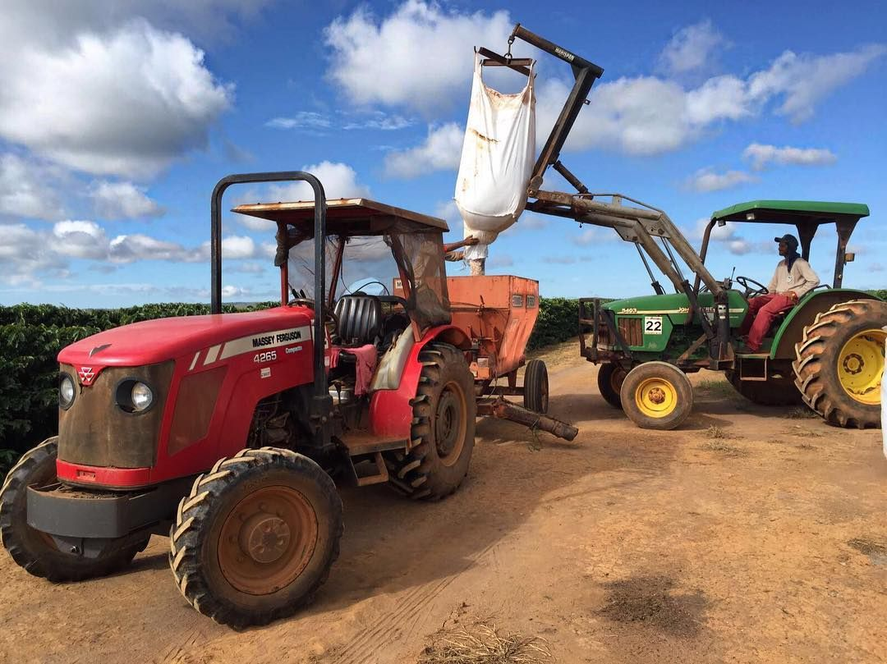
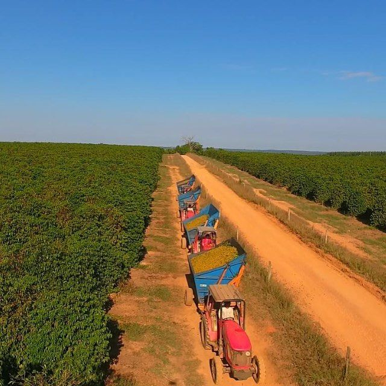
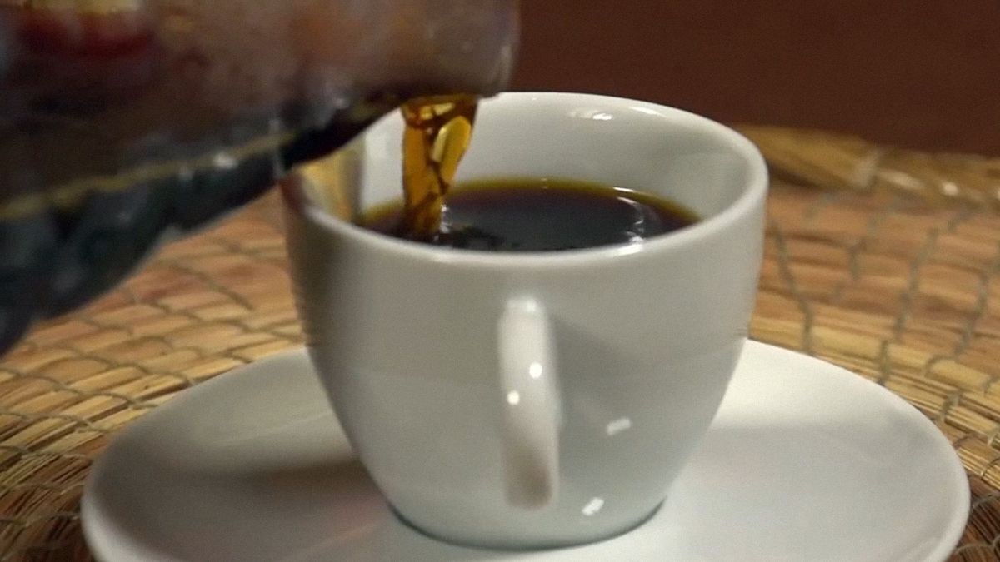

Natural
A cereja seca inteira, com casca e polpa. Mais corpo, doçura intensa e notas frutadas.
Aqui todos os cafés são tratados como especiais. Paixão e dedicação da formação da muda ao armazenamento, com cada lote rastreável.
Nossos cafés, nossas paixões
O mesmo fruto, quatro perfis de xícara. Tudo depende do que se tira da cereja antes da secagem.
A cereja seca inteira, com casca e polpa. Mais corpo, doçura intensa e notas frutadas.
Sai a casca, fica parte da mucilagem. Equilíbrio entre doçura e limpeza. É o carro-chefe do Chapadão.
Descascado com mucilagem controlada, que carameliza durante a secagem. Dulçor marcante.
Sem casca e sem mucilagem. Xícara limpa e brilhante, com a acidez do terroir em primeiro plano.
Um ciclo de produção sustentável, acompanhado de perto em todos os núcleos.
Mudas selecionadas e plantio em sulcos abertos com GPS, para linhas precisas e melhor uso do terreno.

Nutrição guiada por análises, manejo integrado de pragas e doenças e braquiária nas entrelinhas.

A florada abre o ciclo. Depois vêm o chumbinho, a granação e a cereja no ponto ideal.

Colhedoras reguladas para respeitar a planta e trazer o café no momento certo de maturação.

Nos talhões que pedem, a colheita é feita à mão, fruto a fruto, para os lotes mais especiais.

O lavador separa os frutos por densidade antes do despolpamento ou da secagem.

Terreiros e terreiros suspensos, com o café revolvido com cuidado ao longo do dia.

A secagem termina em secadores, com temperatura controlada, até o ponto exato de umidade.

Lotes identificados descansam em tulhas e big bags na Cafeeira Porta do Céu.

Peneiras, mesas densimétricas e seleção eletrônica deixam cada lote limpo e uniforme.

Prova a prova, os lotes são combinados para entregar o perfil de xícara que cada cliente busca.

Torra cuidadosa e prova final. Onde todo o trabalho do ano cabe numa xícara.

Cada lote carrega a sua origem: núcleo, talhão, variedade, processamento e secagem. Com as certificações, isso vira garantia para quem compra.
Fazenda, talhão e variedade registrados desde o plantio.
Do terreiro ao armazém, cada lote segue separado e identificado.
Rainforest Alliance, Nespresso AAA e C.A.F.E. Practices em todas as fazendas.